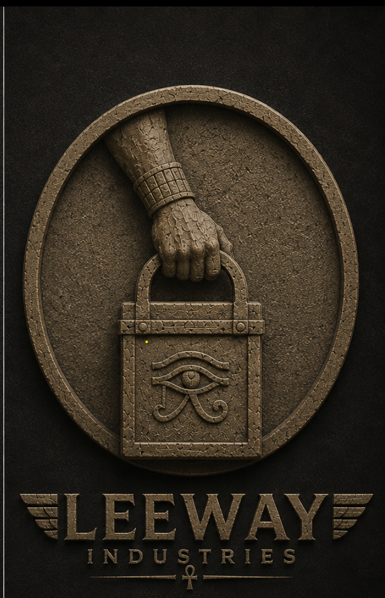

LeeWay Global P2P
Offline-first walkie-talkie dispatch for the LeeWay ecosystem: text dispatches, push-to-talk voice bursts, photo and video snaps, and store-and-forward bundles. Sixty-plus selectable interface languages. Built on local mesh, community mesh and authorized satellite gateways — not on carrier subscriptions.
Install
Android (online or offline): download the signed APK above, or scan the QR code with a phone camera. Android may ask to allow installation from unknown sources. Open the APK to install. No Play account, carrier plan or subscription is needed.
Offline / physical delivery: copy leeway-global-p2p-v1.0.0-release.apk by USB, SD card, Bluetooth/nearby share or courier, then open it on the target device. Verify the SHA-256 below before installing.
Web / PWA: open the app in a modern browser and use your browser's “Install app / Add to home screen” action. The service worker caches the app shell for offline opening.
SHA-256: f451712d6e9730ec561dbeb965c5ca5af251a5e45a51b8f6a23112c42dbd565f
What works without the internet
Opening the app, reading stored messages, signing and encrypting messages, generating pairing QR codes, and exporting/importing encrypted file and video-clip bundles for manual delivery all work offline. Queued messages are retried when a link becomes available and expire according to their TTL.
Distant communication needs a real path: a local mesh peer, a community mesh gateway, an authorized satellite gateway, or a nearby relay. If none is available, the app reports “no qualified route” and keeps messages queued — it never pretends a message was delivered.
Network honesty
| Path | Status |
|---|---|
| Direct WebRTC / local mesh | Available when peers and signaling are reachable; uses browser-native encryption plus app-layer E2E encryption. |
| Community / public mesh gateways | Requires a trusted, signed gateway declaration with a valid capability token. Meshtastic-style MQTT bridges need an internet-connected gateway. |
| Satellite | Requires a real authorized satellite terminal or gateway. Satellite tracking/map data is not a message uplink. The app reports NOT VERIFIED until a qualified gateway is registered. |
| Internet relay | Optional IPv4/IPv6 WebSocket relay for signaling and fallback. Self-hosted; no paid carrier dependency. |
Licensing note: amateur-satellite links carry restrictions, including limits on encrypted transmissions in some jurisdictions. Use only gateways you are authorized to operate.
Family rollout (three steps)
1. Get the app: open this page on any phone, tablet or computer and install the PWA, or install the signed APK on Android. For iPhone/iOS, use the web app and “Add to Home Screen”.
2. Join the family circle: import the signed invite link or identity bundle. The app verifies the member's key fingerprint and room; a URL alone is never trusted.
3. First walkie-talkie test: send a text dispatch, a push-to-talk burst and a snap. Watch per-recipient confirmations. If someone is offline, the dispatch stays queued or can be exported as an encrypted bundle.
QR codes are for face-to-face pairing. Across countries, use the hosted link or an encrypted bundle file; a QR cannot cross an ocean by itself. Full guide: Family onboarding.
Verification
Source, build commands, tests, negative cases, signature checks and known blockers are recorded in VERIFICATION.md and in the repository. No result is claimed without executed evidence.